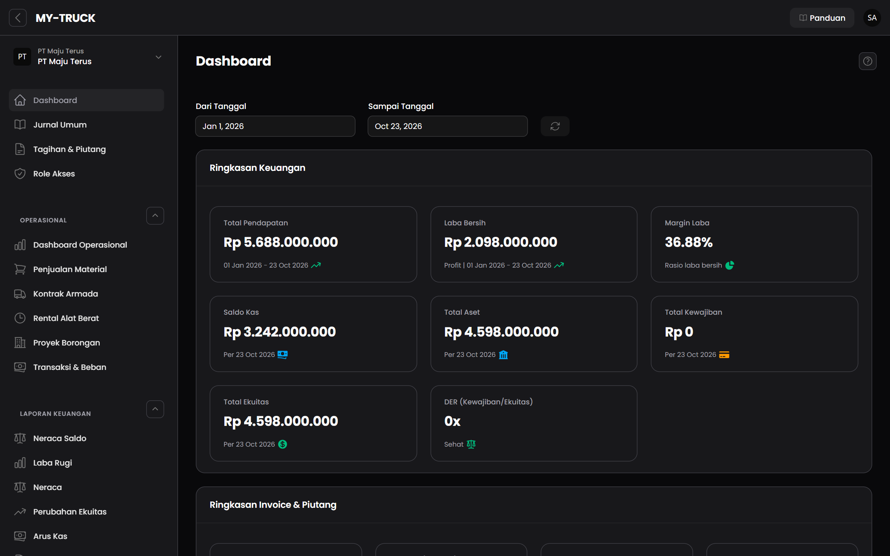

MY-TRUCK — Sistem Operasional & Keuangan Alat Berat
Memindahkan penjualan material, sewa alat berat, kontrak armada, proyek borongan, dan laporan keuangan dari catatan Excel manual ke satu sistem untuk beberapa PT.
- Hak akses per peran (Admin, Accountant, Owner) sehingga tiap peran hanya melihat transaksi dan laporan yang dibutuhkan
- Multi-perusahaan: data tiap PT terpisah dalam satu aplikasi
- Jurnal otomatis dari transaksi operasional (invoice, pembayaran, penjualan material)
- Laporan neraca, laba rugi per lini usaha, arus kas, perubahan ekuitas, dan neraca saldo — dapat diekspor ke PDF
- Persediaan material dengan harga pokok rata-rata bergerak (moving average)
Masalah
Penjualan material, sewa alat, kontrak armada, dan keuangan dicatat terpisah di Excel, sehingga sulit mengetahui laba tiap lini usaha dan posisi piutang secara cepat.
Peran saya
Menggali kebutuhan, merancang database dan hak akses, membangun seluruh modul, lalu menjalankan UAT bersama pengguna bisnis dan menyempurnakan fitur dari masukan mereka.
Tantangan teknis
- Penomoran jurnal yang berhenti di 1.000 transaksi per PT per bulan — ditelusuri dan diperbaiki agar tanpa batas.
- Pembatalan (void) transaksi harus merambat: jurnal pembelian yang dibatalkan ikut mengembalikan stok material.
- Isolasi data antar PT pada query laporan, sekaligus mempercepat laporan dengan membatasi data yang dipindai.
- Hak akses laporan yang ternyata belum dicek — ditemukan, diperbaiki, lalu modul lain disisir untuk pola serupa.
Kode sumber milik perusahaan. Tangkapan layar menggunakan data contoh.